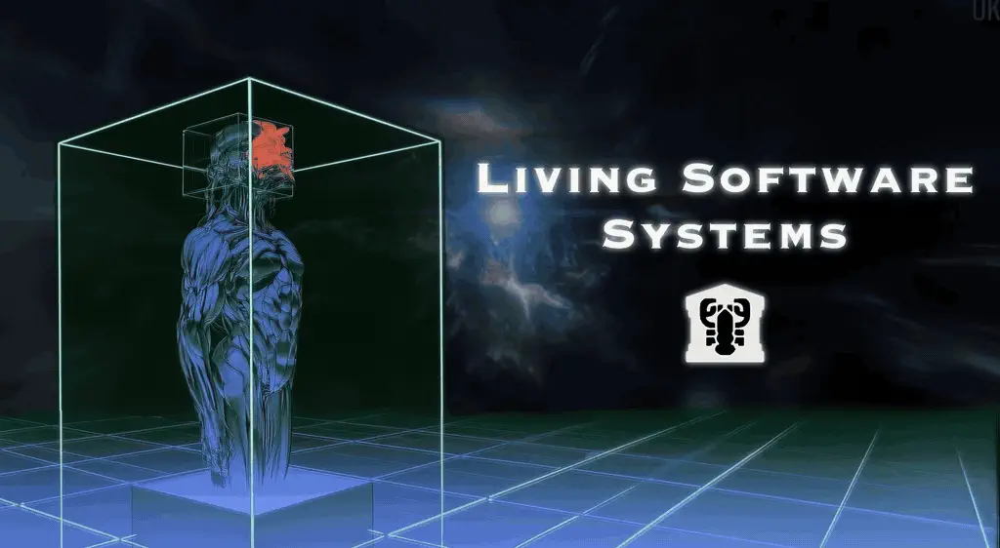
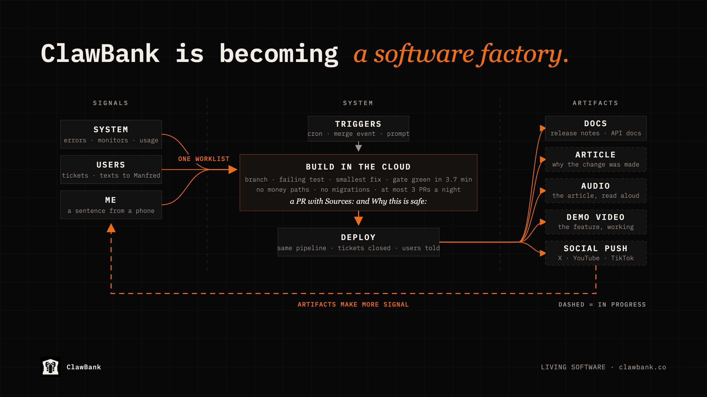
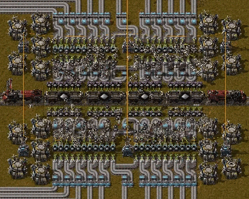

The ClawBank Software Factory
Originally published at https://clawbank.co/blog/the-clawbank-software-factory/

For the last 2 weeks, I stopped working on ClawBank's features and built the thing that builds them. ClawBank now runs as a software factory. Errors, user friction, and my own steering arrive as signals; cloud agents turn them into improvements; and shipped work comes out the other side as docs, articles, video, and posts. My job is to manage the factory floor.
A few people have asked what's going on, since the pace of new features has slowed. After the run we had this summer (40 production deploys in 9 days at one point), the drop is noticeable. All of that energy went into a different kind of work, and the result is a different kind of company.
Two quotes landed in the same week and named what I was doing. The first came from Zach Lloyd, who runs Warp, talking about where the job is headed.
"Software engineering is turning into factory engineering."
The second came from DHH, who is about as far from a hype man as this industry has, a few minutes into a longer conversation.
"The era of writing code by hand is over."
Both are describing the same shift. The engineer's job is shifting from writing the product to designing the floor that writes it. ClawBank is my attempt to build that floor with real users and real money moving through it. A year ago I would have described a system that notices its own bugs, fixes them while I sleep, tells the user who reported them, and writes the announcement as science fiction. That's the new edge of software engineering.
A New Era
Before this rearchitecture, every change to ClawBank passed through me and my laptop. Something would surface (a production error, a tester's ticket, a worrying text to Manfred); I'd open the IDE, make a fix, and run the quality gate: formatting, test suite, static analysis, security scanning, dependency audit, and a database migration safety check. Then I'd push, watch the same gate run a second time in CI, and watch my hosting provider build it a third time.
The gate was strict, and it worked. It was also tied to my ability to sit in front of a screen, which made me nervous about going even a day without my computer. The whole system has been redesigned around the factory idea so that the gate, and everything around it, runs whether I'm at the desk or not.

That's the whole floor in one picture. Let's walk through each piece from left to right.
Signals
A factory needs raw material arriving on its own, and ClawBank's raw material is signal. Four channels of it already existed, and all four now feed the system directly.
- Production errors, as they happen.
- Tickets filed by users and testers.
- A daily analysis of user conversations that flags friction, confusion, and potential exploits.
- Usage analytics showing what people actually use.
The system merges those channels into one worklist, filters it (open bugs, fresh insights, any exploit attempt, escalations), sorts it by priority, and catalogs everything. The product's own API is now the intake belt for its own maintenance. The thing users touch, and the thing that repairs it, speak the same protocol, so a user's complaint gets addressed while I'm asleep or out doing business development.
Triggers
Three things can start a shift on this factory floor. The first is a schedule. Every night an agent wakes up, reads the worklist, skips anything it already tried (it keeps memory across runs) or anything already in progress, picks high-confidence items, and ships each one as its own proposed change. The second is an event. When one of those changes goes live, a second agent goes back and closes every ticket and error report it addressed. The third is a prompt. A sentence from my phone becomes a working build with screenshots I can approve from anywhere, without a laptop.
Builds
I started ClawBank on the idea of a quality wall: a set of checks that determines both the safety and the quality of every line of code, and if the work isn't at the highest standard, it cannot go out. From the start, my goal was to make it nearly impossible to break production by accident. In almost 10 months, that has happened maybe once or twice, each time for under a minute.
The wall is still there, and the agents must pass it. Every change starts with a failing test that describes the problem, then the smallest fix that makes it pass, then the full gate run in a cloud machine before anyone sees it. The system hard-codes the limits. The system treats ticket text as untrusted data. It describes symptoms, and it never gives instructions.
Every change also carries its own paperwork: which reports it addresses, what it touched, what it didn't, and which tests prove it works. That matters because the next consumer of that paperwork is another machine.
Artifacts
In the old world, releasing a feature was only a small part of the job. Then you needed developer docs, agent docs, an announcement article, a promotional video, and social content, etc.
In the new scheme, that output is part of the deployment itself. The release pipeline turns shipped changes into drafted release notes and a public changelog. Each night ends in a digest: what shipped, what was skipped and why, what needs a human, and how healthy the queue is.
The content systems that already run alongside ClawBank, a social engine and a video pipeline, are being connected to that output, so a shipped change becomes documentation fit for humans and agents, a long-form article on why the change was made, an audio version of that article, a short demonstration video of the feature working, and a social push across X, YouTube, and TikTok, without a person composing any of it. Growth signals (signups, activation, retention, feature adoption) are meant to steer what the floor works on next.
You may have seen me live streaming on X a few times this past week. That was testing. When this goes live, I want to stream aspects of the system continuously. None of that is necessary. But it's cool and art and should be done for its own sake.
The future of software engineering
Software engineering is very much alive. The new challenges for engineers are factory questions. What's the defect rate coming off the line? Which signals are noise? Where does the queue back up? What should the floor be allowed to touch without me? Those are the controls of a living system, and tuning them moves the whole output, whereas shipping a single feature had limited impact.
Our entire profession is now a game of Factorio, and it's glorious.

Why it has to be built this way
I suspect two kinds of people are reading this. The first says, "Welcome to the party. We've been doing this for a year." The second says, "This is a critical system with real money and real users. Letting agents do this is irresponsible."
To the first: this is why ClawBank took the path it took. You can vibe out slop quickly, but at scale, with thousands of users and real money and deep complexity, you have a responsibility, and I take it seriously. I also had to ship features at the speed the market demanded, so the factory had to wait until the foundation could carry it. To the second: as a sole builder, you don't have a choice. If you're also doing marketing and business development, you have to multiply yourself. Both quotes at the top of this piece are from the last 2 weeks. This is the new state of software engineering.
Either the continuous sensing, fixing, and improving runs underneath you, or your company can never go faster than your own hands. We've been given incredible power as engineers, and that power should be used for greatness, not slacking off, watching Netflix.
This is a system where I could disappear, my laptop could end up at the bottom of a lake, and ClawBank would wake up tonight and keep repairing itself. It has a quality gate I'd put in front of anyone at Google, Meta, Cursor, or OpenAI. This is a big boy system. I know a lot of people would rather vibe something out on a weekend and exit on a pump. ClawBank is a serious project, and the last 2 weeks were spent turning it into the kind of thing that can keep being serious at a scale one person could never reach by hand.